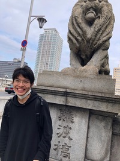

La memprezento de Yudai Yamamoto
Profilo
alteco : $1.064 \times 10^{37}\ell_P$
korpa pezo : $2.527 \times 10^{9}m_P$
Naskiĝloko：Sabae Fukui
hobio：Matematiko
Profesio：studento
poŝtadreso : 83c2c823b8 (bonvolu meti "@gmail.com")
Kariero
07/05/2001: naskiĝo04/2004 : Yosie vartejo konfeso
03/2005 : Yosie vartejo forlaso
04/2006 : Shimei infanĝardeno translokigo
04/2008 : Toba bazlernejo konfeso
03/2014 : Toba bazlernejo diplomiĝo
04/2014 : Chuo Mezlernejo konfeso
03/2017 : Chuo Mezlernejo diplomiĝo
04/2017 : Fujishima mezlernejo konfeso
03/2020 : Fujishima mezlernejo diplomiĝo
04/2020 : Kanazawa universitato konfeso
03/2021 : Kanazawa universitato forlaso
04/2021 : Osaka universitato konfeso
Kvalifiko
- unuaklasa amatora radiofunkciigisto
- Klaso 4 Hazardous Materials Handler
- Nivelo de Angla 2
- Kanji Testa Nivelo 2
- Naniwa Io ajn Osaka Testa Nivelo 3
- Ordinara aŭtopermesilo
- Ordinara motorciklo-licenco